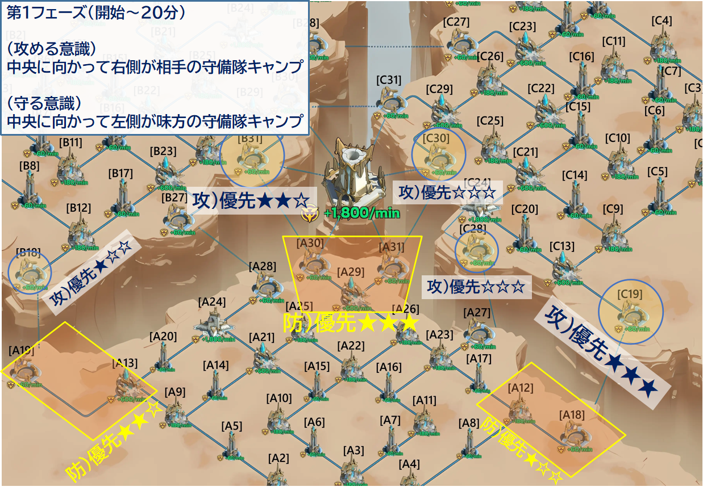
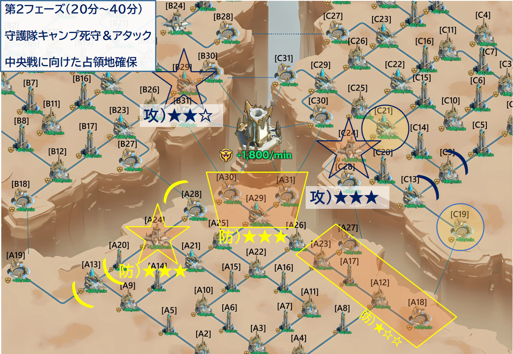
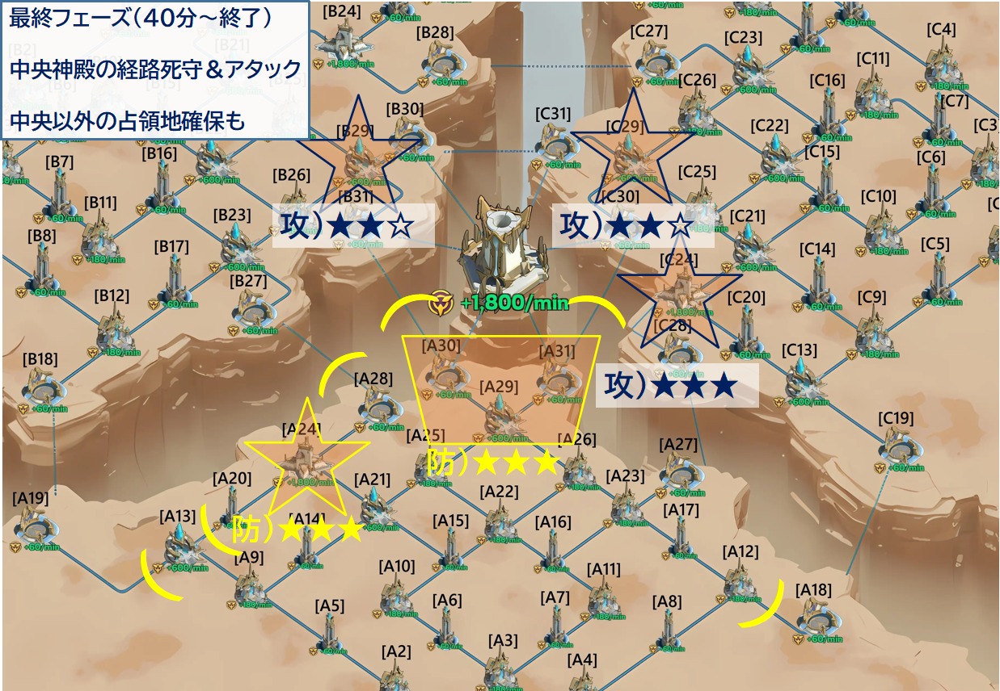

第1フェーズ（開始〜20分）：中立建物の占領
自陣側の中立建物をいかに早く占領するかが最初の勝負です。占領することでポイントリードと、クリスタル回復を早める隊長（守護者）枠を確保できます。
- 待機列が長い場合は突撃を使って占領を加速する
- 最後の守備兵を倒した同盟が占領権を得るため、部隊を絶え間なく送り込む
占領した建物にはすぐ隊長を任命し、クリスタルの蓄積を始めます。
- 序盤はクリスタルが少ないメンバーへ優先的に
- 前線が活発になったら、激しく戦うメンバーへ切り替えて部隊を維持しやすくする
20分になると守護隊キャンプのシールドが解除されます。高ポイント＋強力なエネルギー回復枠（ゴールド枠）を持つ重要拠点のため、直前に部隊を目の前で待機させておくのが有効です。
また、敵の裏取りにも注意。マップ全体を広く見て、背後の建物が奇襲されていないか確認しましょう。

第2フェーズ（20分〜40分）：守護隊キャンプの争奪
20分でシールドが解除される守護隊キャンプは、このフェーズの最重要拠点です。
- 毎分 1,800pt（中央神殿と同等）を生成
- ゴールド隊長枠（クリスタル回復+60,000/分）を提供
- 敵の守護隊キャンプを奪うと、ポイント停止＋補給路の遮断にもなる
確保したゴールド枠には、前線で最も激しく戦うメンバーを優先的に任命します。建物を奪われると隊長枠が失われるため、指揮官は隊長ウィンドウを常に監視し、空きスロットを作らないよう再配置を行います。
敵が他同盟との戦闘に集中している隙に、突撃で敵の背後にある手薄な建物を奪い補給を断つのが効果的です。
独走している同盟がいる場合は、一時的に矛先を向けて均衡を保つ判断も必要になります。
40分に「潮汐の神殿」が解放されます。数分前から中央ルートへ戦力を集め始め、敵が神殿へ向かうルート上の建物を事前に押さえておきましょう。

第3フェーズ（40分〜終了）：中央神殿の争奪
神殿には継続ポイント（毎分1,800pt）に加え、試合終了時に占領している同盟へ50,000ptのボーナスが付与されます。
最後の1秒で逆転が起きるのはこのためです。
40分の解放直後から全力で守り続けるのはリソースの浪費になりかねません。
- 序盤は他の2同盟に神殿を争わせて消耗させる
- その間は他の建物を確実に確保して基礎ポイントを稼ぐ
- 残り5分で温存したクリスタルと全戦力を神殿に投入する
- 最初の到着より、最後の守備兵を倒す瞬間に部隊を滑り込ませるのが占領のコツ
- 主力が消耗したら即座に撤退→徴兵→再投入のサイクルを回す
- 敗北した部隊はクリスタルを惜しまず即時復活させ、待機列を埋め続ける
神殿本体だけでなく、敵の補給ルート上の中継拠点を押さえて援軍を物理的に遮断するのが効果的です。敵が神殿に集中している隙に守護隊キャンプを奪い、エネルギー供給を断つのも有効です。
- 僅差で負けている→ 他の建物を捨ててでも全軍を神殿に投入する
- 1位が圧倒的→ 神殿を諦め、3位の建物を奪って2位報酬を確実に取る
色々なケースが想定されますが、皆様の機転で乗り越え楽しみましょう！
